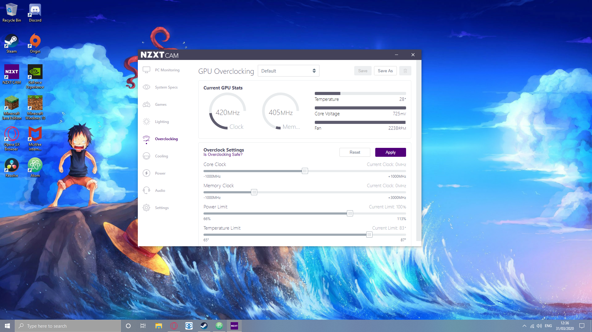
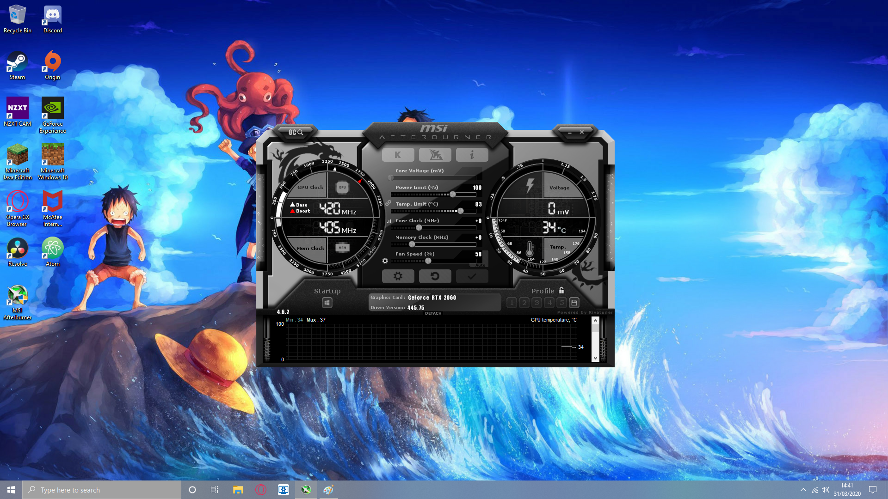
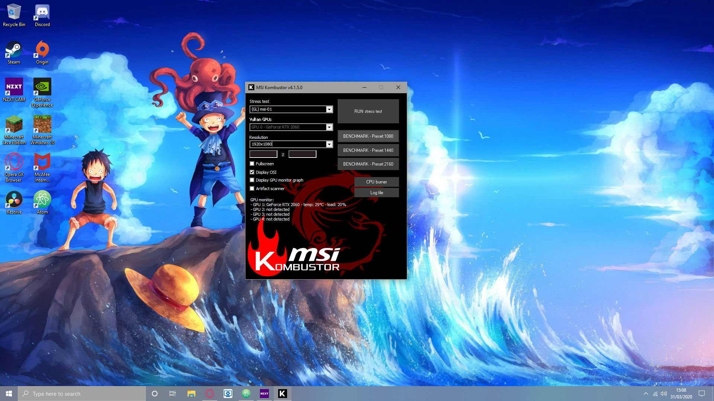

For All Your PC Gaming Information
Welcome to
If you want to start GPU overclocking then you will need either MSI Afterburner or NZXT CAM and you will also need MSI KOMBUSTOR so you can test your overlock
There are 3 main parts to your overclocking software: core clock, memory clock and the limites for power and temperature.
If you have MSI afterburner then there is also a control for your fan speed
Firstly, after you have installed and opened your overclocking software you are going to want to make it so the software's changes to your PC are immidiatly applied as soon as your PC starts up. If you are in NZXT CAM then go to setting and the first thing you will see is "start NZXT CAM on windows startup", click on that so the box is checked. If you are in MSI Afterburner then click the windows button in the corner of the software so it is higlighted with red.
If you are in MSI Afterburner than now is the time to turn up your fan speed to the highest you can handle. If you dont like it being too lound then turn it down but it should be the highest you want (at least 55). You want it very high because overclocking your GPU will make your GPU have a higher temperature and you need a higher fan speed to provide good cooling to your GPU. If you can turn up the speed of all the fans in your PC, in NZXT CAM this would be turning all of your fans to performance. Now you have done this, turn up your power limit and temperature limit to max. Now you can start turning up your core and memory clock. On core clock turn it up by 20 each time and every time you turn it up take a moment to run MSI Kombustor on the highest resolution your monitor or screen has (for instance: if you have a 1080p monitor then run MSI Kombustor at 1080p)
Everytime you test in MSI KOMBUSTOR you should leave it to run for at least 2 mins. If you see graphical errors or the program crashes within that time then you should turn down your overclock setting to the last settings that worked. Keep trying to find the highest and most stable point until you have it. As a last test to check if your core clock is stable, play some games for about an hour or two. If your game craches then you might want to turn down your settings. If you screen ever blacks out or turns off then do not worry, this is just your GPU reverting back to default setting and there is nothing wrong and your PC is not damaged in any way. You may just need to restart your machine. Now you need to start turning up your memory clock. Do the same you did with the core clock but every time turn up you settings by 50 and not 20.